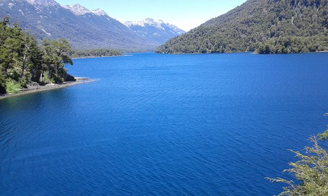

| INFORMACIÓN | FUENTES | VIDEOS | CURIOSIDADES |
|---|
Este ciclo comienza con la evaporación del agua de mares, océanos y de la superficie terrestre gracias al calor del sol, formando nubes.
Este agua vuelve a la tierra en forma de lluvia, nieve o granizo.
Gracias a la porosidad del terreno, parte del agua de la lluvia se filtra.Cuando encuentra una capa de materiales impermeables detiene su marcha y queda almacenada formando bolsas de agua subterránea.
Son los acuíferos, donde el agua puede estar almacenada miles de años.
En estas grandes bolsas de agua subterránea, el nivel superior donde llega el agua se llama nivel freático. Cuando el nivel freático está a la altura del suelo forma una laguna o balsa.Siguiendo las faldas de las montañas el agua se encarrila y se ordena en sistemas de drenaje compuestos por pequeños arroyos que se unen para formar grandes arroyos que desembocan en un río o un cauce principal.
Estos ríos al final desembocan en el mar y se reinicia el ciclo.